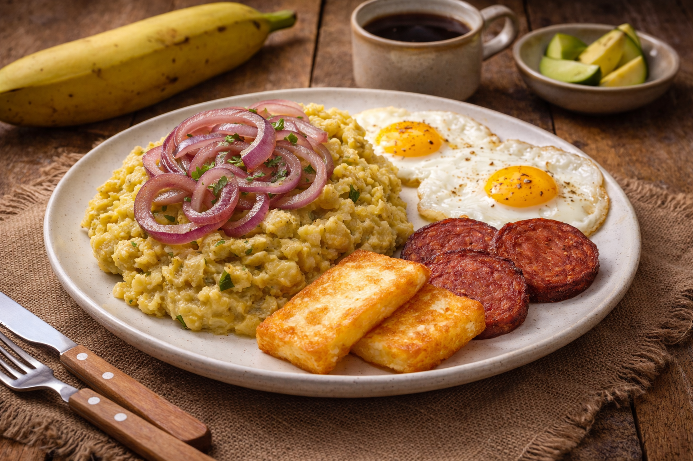
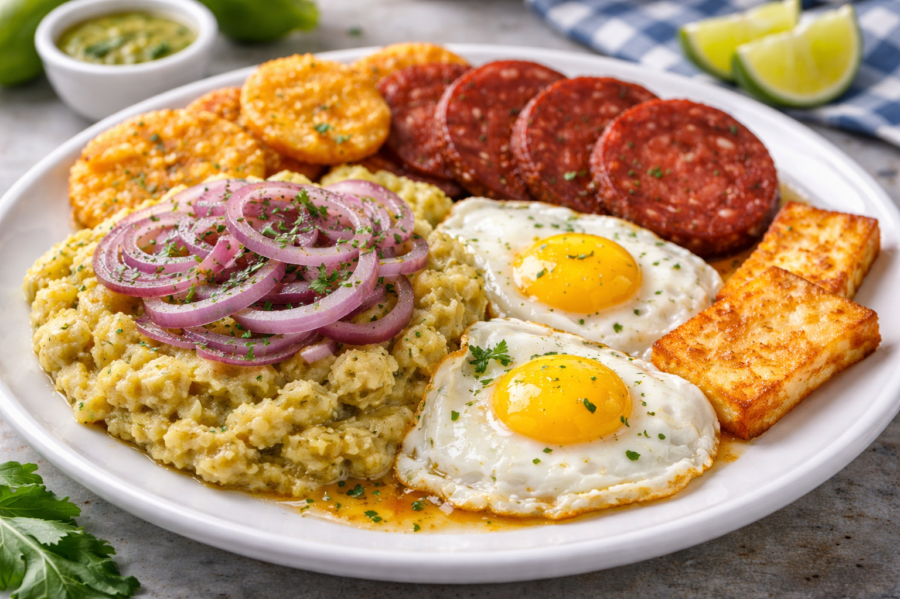

Mangú is one of the most iconic breakfast dishes of the Dominican Republic, traditionally served as part of “Los Tres Golpes” — mashed green plantains topped with sautéed red onions and served alongside fried cheese, fried salami, and fried eggs. The plantains are boiled and mashed until smooth and creamy, creating a soft, comforting base with a mild flavor that pairs perfectly with savory toppings. Mangú is hearty, affordable, and deeply tied to Dominican culture and family breakfasts.
